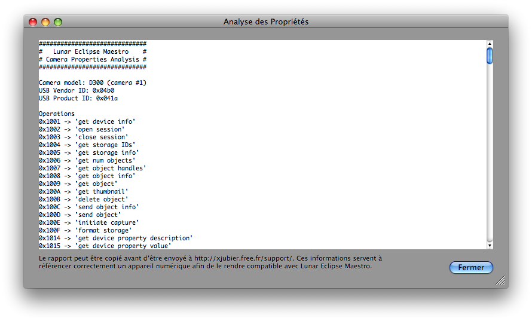

Fenêtre Analyse des Propriétés
Pour visualiser le rapport détaillé des propriétés d’un appareil numérique, vous pouvez ouvrir la fenêtre Analyse des Propriétés dans Lunar Eclipse Maestro. Cette fonctionnalité n’est disponible que lorsque au moins un APN est connecté et qu’aucun script est chargé.
-
Tout d’abord il faut vérifier qu’aucun script, régulier ou d’urgence, n’est encore chargé (⌘U ou Décharger script dans le menu Fichier).
-
Ensuite dans le menu APN sélectionnez Analyse des propriétés…

En utilisant le menu contextuel vous pouvez alors sauvegarder le contenu de la fenêtre dans un fichier texte.
-
Le rapport n’est pas destiné aux utilisateurs finaux. Cependant celui-ci peut m’aider à supporter un appareil numérique ou alors une fonctionnalité spécifique d’un appareil numérique. Lorsque quelque chose ne fonctionne pas avec votre APN, vous pouvez m’envoyer une copie de ce rapport en pièce jointe à http://xjubier.free.fr/support/ ou par messagerie électronique.
|